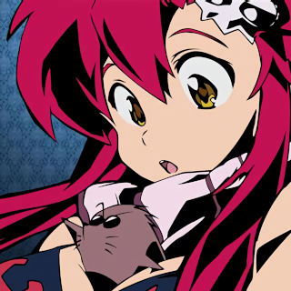

Felt like I haven't been posting on here enough so Ima do a post
So obviously not much has changed on here, I've just been messing with the code and making it cleaner.
I do have an important question for all of you 5 people who look at this,
What should I base my custom Operating System off of?
I was thinking either XV6 or MINIX, both are very small and easy for me to understand (code wise).
If I choose XV6 it'll be closer to a blank slate, since MINIX is closer to a complete OS.
It might also be fun to take XV6 and MACH and use them together, since I can use XV6 as a "springboard" to developing MACH.
I dunno, just email me whichever one you think is best.
P.S. I'm gonna post anime stuff on my Instagram ack ack ack cuz I think that's what the world needs so here's a freebie
